How does the model acquire long-horizon planning through pre-training, via world model internalization, atomic skill composition, and trajectory quality?
Abstract
Multi-turn long-horizon planning
Multi-turn long-horizon planning is a critical capability for foundation model agents, yet how to fundamentally improve it across different training stages remains unclear. Existing models are trained on uncontrollable and opaque Internet data, making it difficult to identify how planning ability is acquired, shaped, and integrated. To address this challenge, we introduce a unified and controlled multi-turn environment that enables precise control over task length, data quality, planning knowledge, and planning patterns, and systematically study long-horizon planning across three stages.
(1) Planning ability acquisition during pre-training. We study data format, distribution, and quality. Explicit world model construction through chain-of-thought state transition modeling yields stronger long-horizon generalization than direct action prediction. Atomic skills alone are insufficient for compositional generalization, whereas a small amount of long-horizon data substantially improves planning ability. Moreover, suboptimal trajectories severely impair performance because decision errors accumulate and amplify over long horizons.
(2) Planning ability shaping via GRPO and OPD post-training. From the perspective of mutual information, we distinguish general planning patterns from task-specific planning knowledge. For planning patterns, we identify three applicability regions of post-training: unnecessary, effective, and unsupported. Compared with group relative policy optimization (GRPO), on-policy distillation (OPD) has a broader effective region under low-quality pre-training data and long planning horizons, as it provides more consistent update directions than sparse credit assignment when the teacher is ideal. For planning knowledge, however, distilling unseen multi-path procedures from a teacher with different underlying knowledge may impair the student's existing world modeling without fully establishing the new knowledge.
(3) Planning ability integration through MOPD post-training. We show that multi-teacher on-policy distillation (MOPD) integrates capabilities by converging to shared planning-pattern distributions across teachers. Compatible patterns enable cross-environment generalization, partially shared patterns support continual learning, while completely conflicting patterns cause severe catastrophic forgetting and cross-environment interference.
Overall, our study provides a unified understanding of how long-horizon planning ability is acquired, shaped, and integrated across training stages, offering practical insights for developing stronger agentic foundation models.
Multi-TurnLong-HorizonAgenticPlanning
Pre-TrainingRLGRPOOPDMOPD
A Core Question for Multi-Turn Long-Horizon Planning
How to fundamentally improve long-horizon planning ability of foundation models at different training stages?

Three Basic Sub-questions for Multi-Turn Long-Horizon Planning
How does RL shape long-horizon planning, and what are the applicable boundaries of RL algorithms in shaping planning knowledge and patterns?
How does model consolidation integrate long-horizon planning abilities to enable cross-environment generalization, continual learning, and conflict resolution?
Task Formulation
Controllable Planning Gym
As shown in Figure 2, we construct hierarchical skill graphs across three distinct domains (e.g., Fantasy Alchemy, Livestock Farming, Electronic Assembly). Task difficulty is determined by the minimum number of actions (i.e., synthesis steps) required to produce a target item from a given initial inventory.

3distinct domains
5levels
200item categories per domain
400state transitions per domain
Evaluation. For each test task, we independently run the agent K times in a multi-turn setting. Avg@K is computed by averaging Pass@1 over the K independent runs. Pass@K is the fraction of tasks solved in at least one of the K runs.
Three training stages
Long-horizon planning ability across three training stages
Based on this framework, we draw the following conclusions through three progressive stages: large-scale pre-training, RL-based post-training (OPD and GRPO), and multi-teacher model consolidation post-training (MOPD).
01
Planning Ability Acquisition during Pre-training
Data format, data distribution, and data quality
At this stage, we analyze the acquisition of long-horizon planning ability from three perspectives: data format, data distribution, and data quality.
01.1 · Data format: world-model internalization
Planning with Internalized World Model
Fundamentally, a world model represents the underlying dynamics of an environment, serving as an internal simulator of how the environment transitions between states over time. It captures the relationship between current states, actions, and future states.
TakeawayInternalized world models enhance multi-turn long-horizon planning generalization. While direct answering converges faster, requires a lower token budget, and is more efficient for tasks relying on memorized answers, it generalizes poorly to multi-turn long-horizon planning. In contrast, planning with a world model achieves stronger generalization and higher final accuracy on multi-turn long-horizon planning tasks.


01.2 · Data distribution: atomic compositional generalization
Atomic Skill Compositional Generalization
Atomic skill compositional generalization refers to the ability of an agent to combine known atomic skills into new compositional skills for solving unseen complex tasks. In this work, such compositional ability is acquired through pre-training and encoded in the model parameters.
TakeawayModels struggle with automatic compositional generalization, but minimal long-horizon trajectories activates long-horizon planning. Learning atomic skills exclusively from short tasks is insufficient for solving multi-turn long-horizon planning tasks. However, introducing just a small fraction of long-horizon trajectories teaches the agent how to connect these skills sequentially, bridging the performance gap on longer tasks.

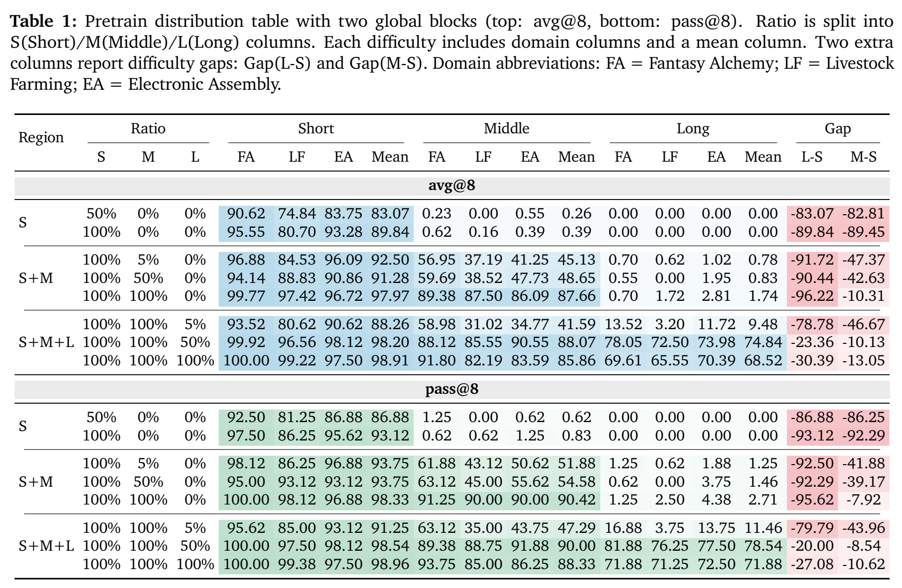
01.3 · Data quality: suboptimal trajectories
Impact of Suboptimal Trajectories
Increasing the diversity of optimal reasoning templates from 1 Optimal to 4 Optimal does not significantly degrade or improve performance. The model maintains similar success rates across all three domains.
TakeawayImperfect pre-training data severely degrades multi-turn long-horizon planning. In real-world environments, pre-training data naturally contains non-optimal trajectories instead of perfect expert demonstrations. These sub-optimal paths introduce reasoning errors that accumulate heavily over long horizons. When trained on this mixed data, the agent fails to complete long tasks. Trying to overcome these learned flaws by simply increasing sampling is ineffective, as it fails to improve the success rate in long-horizon tasks. Furthermore, in multi-turn scenarios, relying on massive sampling causes unacceptable computational costs, making it impractical for real-world deployments.

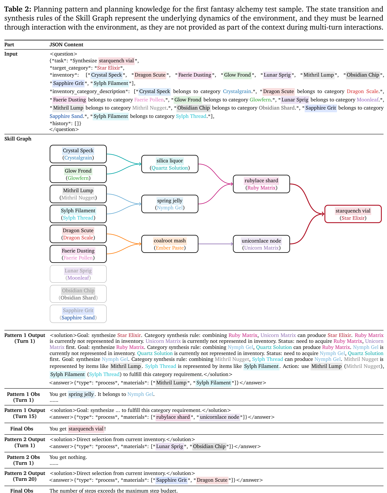
02
Planning Ability Shaping via GRPO and OPD Post-training
Mutual Information for Planning Pattern and Planning Knowledge
At this stage, we analyze planning ability through the lens of mutual information and divide it into two aspects: planning patterns and planning knowledge. Planning patterns capture general planning behaviors shared across tasks, while planning knowledge contains task-specific procedures and solutions.
02.1 · Planning patterns
Impact of Planning Pattern
We define three regions to characterize when RL can improve planning. The regions are determined by the performance gap among planning patterns and the ability of RL to discover better patterns.
Region A
Unnecessary Region
Different planning patterns achieve similar performance in this region. RL-based selection is unnecessary because choosing different patterns leads to comparable results.
Region B
Effective Region
Different planning patterns show clear performance differences in this region. RL can discover better patterns through optimization and achieve consistent performance improvements.
Region C
Unsupported Region
Better planning patterns exist in this region, but discovering them depends on the RL algorithm design. An inappropriate RL algorithm may fail to activate the best planning pattern.
TakeawayPlanning knowledge is better suited for SFT (unnecessary region). When planning knowledge has high mutual information, different samples may require different optimization directions. The limited update magnitude of RL makes it difficult to inject such knowledge effectively.
Planning patterns are better suited for RL (effective region). When planning patterns have low mutual information, different samples share similar optimization directions. RL can stimulate these patterns and improve generalization across samples that contain similar patterns in the pretraining corpus with high expected rewards.
Multi-turn long-horizon tasks need fine grained credit assignment like OPD (GRPO unsupported region). Outcome based rewards struggle when correct and incorrect actions mix in long trajectories, making fine grained reward based methods necessary. OPD demonstrates a larger effective region than GRPO with an ideal teacher.
OPD follows teacher patterns to improve performance, but it reduces entropy and limits its upper bound. In the effective region, OPD performs similarly to GRPO but scales worse with more sampling times.
Although pass@k exceeds the base model with large k in long-horizon tasks, we do not think that RL improves the model's capability ceiling. Instead, we argue that pass@k is distorted in this setting because pre-training data may already contain the correct trajectories.
RL shifts CoT length toward high-reward patterns in the pretraining data. The output length increases depending on whether the better planning patterns are longer.
Planning patterns are better suited for RL (effective region). When planning patterns have low mutual information, different samples share similar optimization directions. RL can stimulate these patterns and improve generalization across samples that contain similar patterns in the pretraining corpus with high expected rewards.
Multi-turn long-horizon tasks need fine grained credit assignment like OPD (GRPO unsupported region). Outcome based rewards struggle when correct and incorrect actions mix in long trajectories, making fine grained reward based methods necessary. OPD demonstrates a larger effective region than GRPO with an ideal teacher.
OPD follows teacher patterns to improve performance, but it reduces entropy and limits its upper bound. In the effective region, OPD performs similarly to GRPO but scales worse with more sampling times.
Although pass@k exceeds the base model with large k in long-horizon tasks, we do not think that RL improves the model's capability ceiling. Instead, we argue that pass@k is distorted in this setting because pre-training data may already contain the correct trajectories.
RL shifts CoT length toward high-reward patterns in the pretraining data. The output length increases depending on whether the better planning patterns are longer.


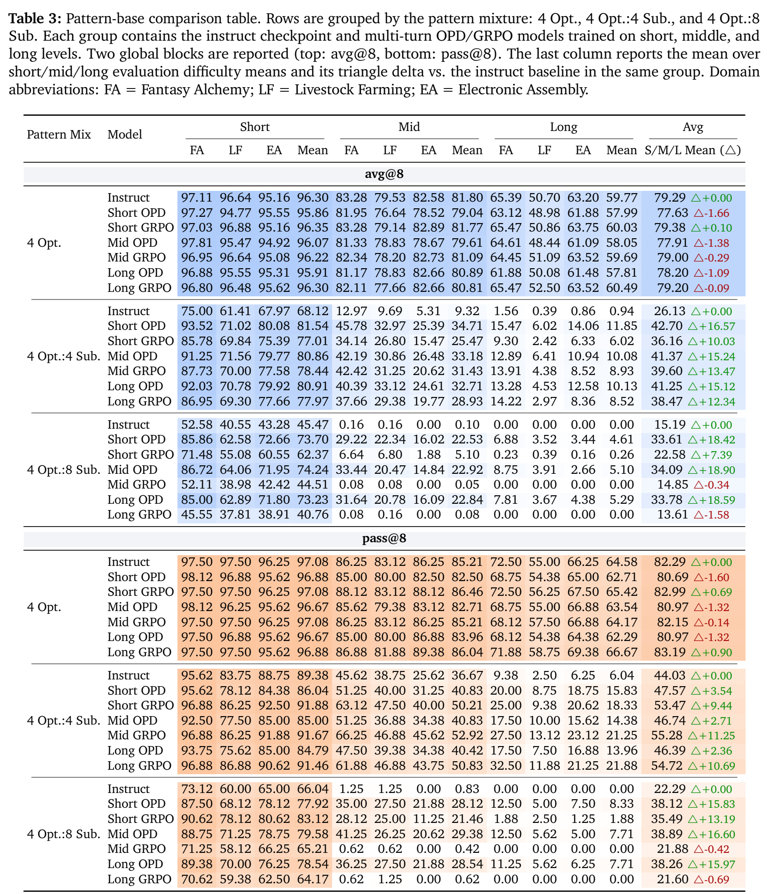
Gradient Direction Analysis
Top-k Subspace for SVD
Beyond measuring task performance, we analyze whether the model already follows the final parameter-update direction in the early stages of training. Specifically, we compare the dominant update directions of early and intermediate checkpoints with those of the final checkpoint.
TakeawayOPD exhibits stronger directional stability than GRPO under long-horizon and low-quality pre-training corpus settings. While GRPO shows inconsistent or even vanishing update directions as task horizon and non-optimal actions increase, OPD maintains consistently high subspace alignment, suggesting more reliable credit assignment in ideal teacher condition.


02.2 · Planning knowledge
Impact of Planning Knowledge
In real-world environments, there are multiple reasonable and effective paths to complete a task. This multi-path characteristic exposes a core issue in knowledge distillation: when the student and teacher models form divergent procedural knowledge based on different pre-training corpora, can this knowledge be effectively distilled?
TakeawayOPD requires aligned procedural knowledge between student and teacher. OPD cannot effectively distill knowledge from a perfect teacher when the student and teacher internalize different procedural paths for the same goal. Successful distillation requires similar internal world modeling between the teacher and student.
Mismatched procedural distillation collapses ID planning knowledge while mildly affecting OOD generalization. When teacher and student follow different valid procedures, distilling the mismatched path overwrites the student's existing planning knowledge tokens.
OPD distills patterns early but fails on mismatched knowledge late. In the early stage, OPD successfully distills better planning patterns to improve performance. In the later stage, forcing OPD to distill completely different procedural knowledge leads to a training collapse.
Mismatched procedural distillation collapses ID planning knowledge while mildly affecting OOD generalization. When teacher and student follow different valid procedures, distilling the mismatched path overwrites the student's existing planning knowledge tokens.
OPD distills patterns early but fails on mismatched knowledge late. In the early stage, OPD successfully distills better planning patterns to improve performance. In the later stage, forcing OPD to distill completely different procedural knowledge leads to a training collapse.


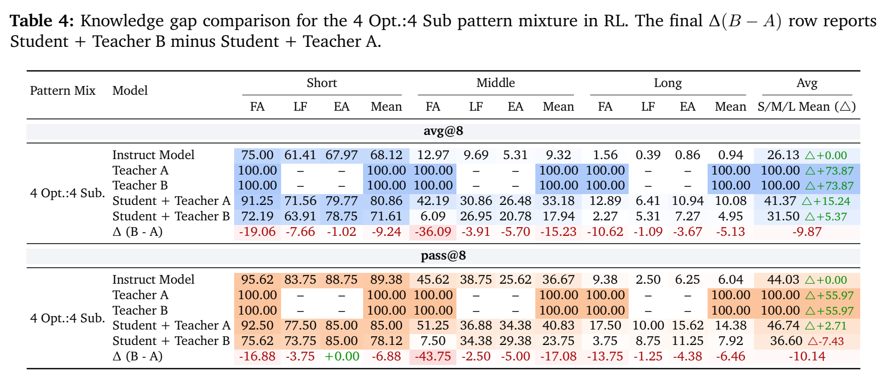
KL Dynamic Analysis
KL Dynamic and Overlap
The proportion of the four data types shows that the number of correct trajectories with incorrect steps is extremely small. This indicates a need to add more error correction data. Gold standard data alone fails to stimulate the recovery ability from error state prefixes.
TakeawayIncorporate error correction data. Relying solely on gold standard data is insufficient. Training pipelines need error state prefixes to teach models how to recover from mistakes.
RL updates are too small to support sample-specific large-scale knowledge distillation. Standard RL updates are too small for the point by point optimization required to distill massive planning knowledge.
The same target can be reached by multiple different but correct reasoning paths. If the teacher misses them, OPD may assign wrong probabilities to valid paths and hurt the student's existing knowledge via KL loss.
Early pattern learning improves RL rewards, but failure to learn task-specific tokens may cause later degradation. Models easily optimize general planning patterns early in training, but they struggle to distill high variance planning knowledge in later stages.
RL updates are too small to support sample-specific large-scale knowledge distillation. Standard RL updates are too small for the point by point optimization required to distill massive planning knowledge.
The same target can be reached by multiple different but correct reasoning paths. If the teacher misses them, OPD may assign wrong probabilities to valid paths and hurt the student's existing knowledge via KL loss.
Early pattern learning improves RL rewards, but failure to learn task-specific tokens may cause later degradation. Models easily optimize general planning patterns early in training, but they struggle to distill high variance planning knowledge in later stages.


03
Planning Ability Integration through MOPD Post-training
Definitions and Research Problems
Multi-Teacher On-Policy Agentic Distillation (MOPD) is a method that distills and combines the abilities of multiple teacher models into one student model. To analyze the three problems above, we propose a unified framework. As shown in Figure 16, we use two dimensions for our analysis: (1) whether there is a shared area of planning patterns, and (2) whether the planning patterns are compatible with different environments.

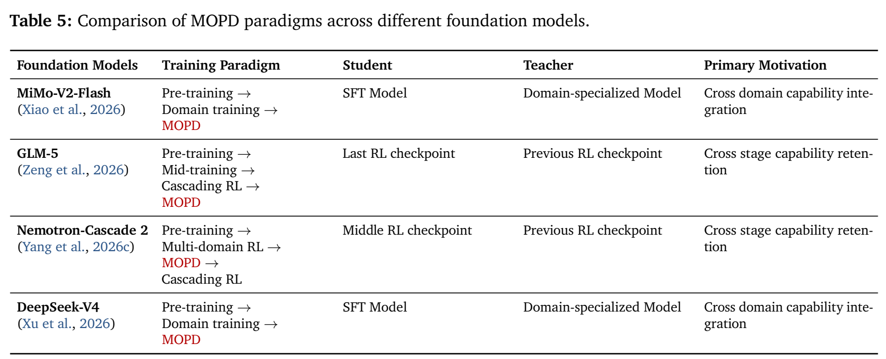
Type I · Shared and Compatibility Planning Patterns
Shared and compatible planning patterns enable cross-environment generalization.
When multiple environments share compatible planning patterns, MOPD can transfer the capability learned from one domain teacher to other domains, even if each teacher itself is only effective in its own environment.
Type II · Shared and Conflict Planning Patterns
Shared Planning Patterns with Planning Patterns Conflict still supports continual learning.
MOPD learns from new teachers while preserving earlier domain skills when teacher patterns still share usable structure.
Type III · No Shared and Conflict Planning Patterns
No Shared Planning Patterns with Planning Patterns Conflict causes severe forgetting.
Experts from different environments conflict with each other, so the student tends to forget one expert after learning another.
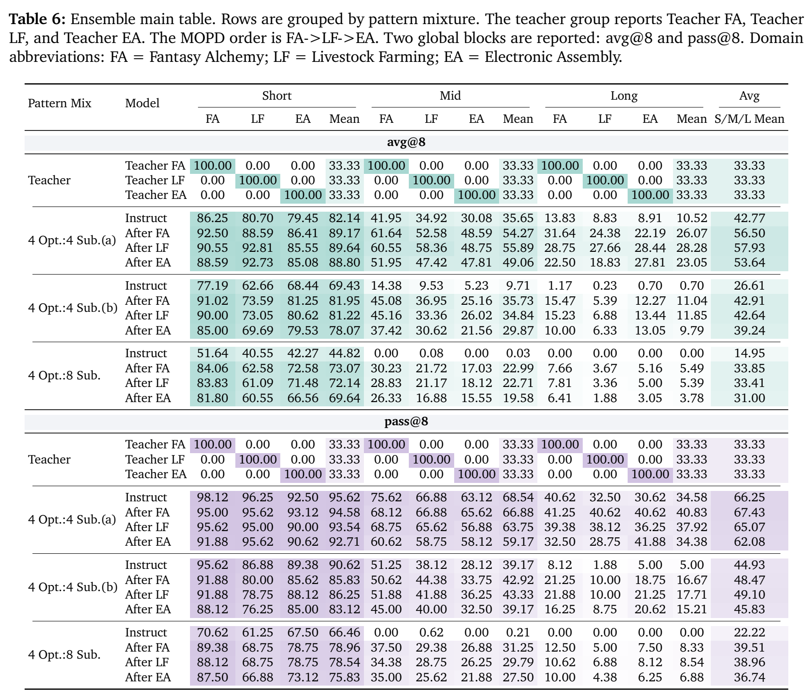
Figure Results
MOPD performs mode seeking over the shared teacher distribution.
Sequential multi-teacher OPD does not simply cover all planning patterns from all teachers. Instead, it tends to collapse toward a subset of shared high-quality planning modes, revealing that the core mechanism of MOPD is to identify and amplify the shared distribution among teachers.
TakeawayCross-environment generalization is bounded by the student's existing pattern support. MOPD can activate and strengthen planning patterns that already exist in the student's underlying distribution, even when they are diluted by low-quality SFT data. However, it cannot reliably create planning patterns that are absent from the target environment's pretraining or SFT support.


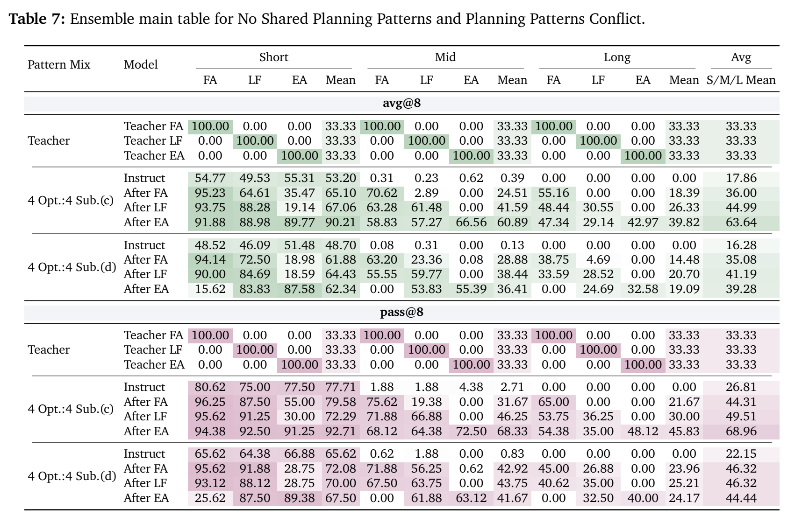
Task Setup
Parameter Dynamics for MOPD
We study the parameter change of MOPD on three tasks, namely FA, LF, and EA. We use PCA to show the model positions in a low dimensional space. We also compute pairwise L2 distance between model parameters and cosine similarity between update directions.
TakeawayMOPD keeps the base model parameter stable. The MOPD checkpoints remain close to the instruct model in both PCA space and parameter distance.
MOPD learns task signals with small updates. Each stage changes the parameters only slightly, and different stages bring different update directions, which explains why OPD has difficulty acquiring large-scale task-specific planning knowledge that is absent from pre-training.
MOPD learns task signals with small updates. Each stage changes the parameters only slightly, and different stages bring different update directions, which explains why OPD has difficulty acquiring large-scale task-specific planning knowledge that is absent from pre-training.

Appendix
Appendix Tables
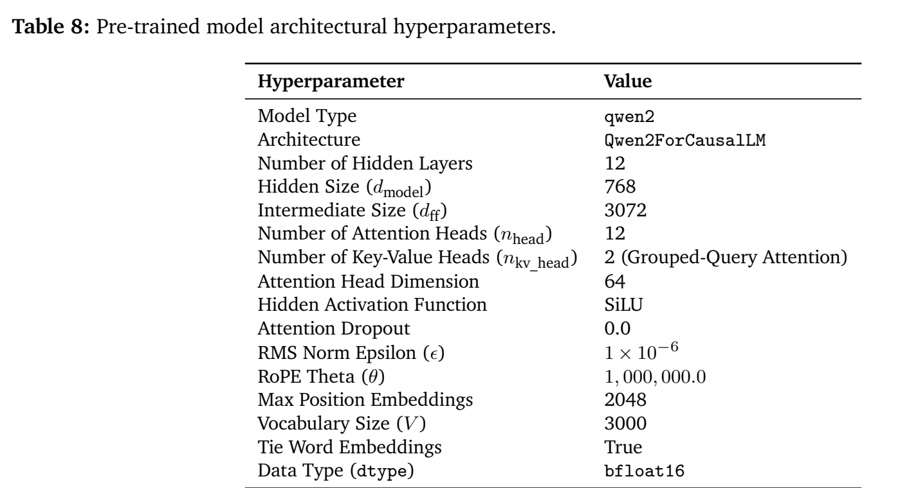
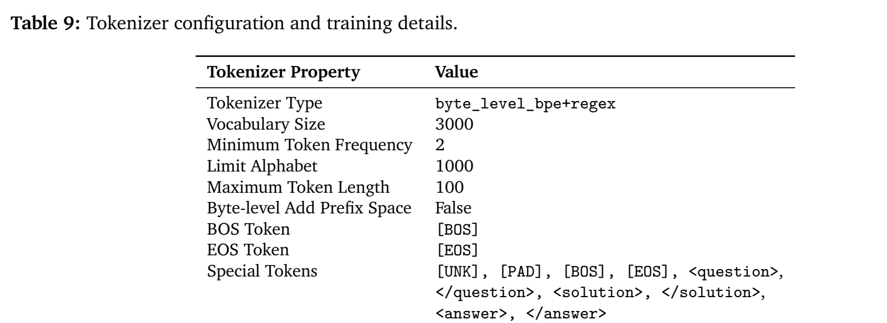
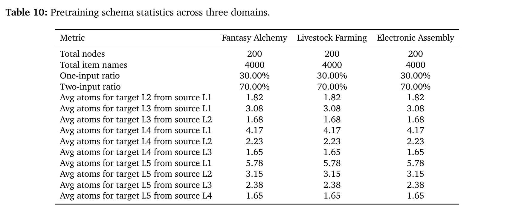
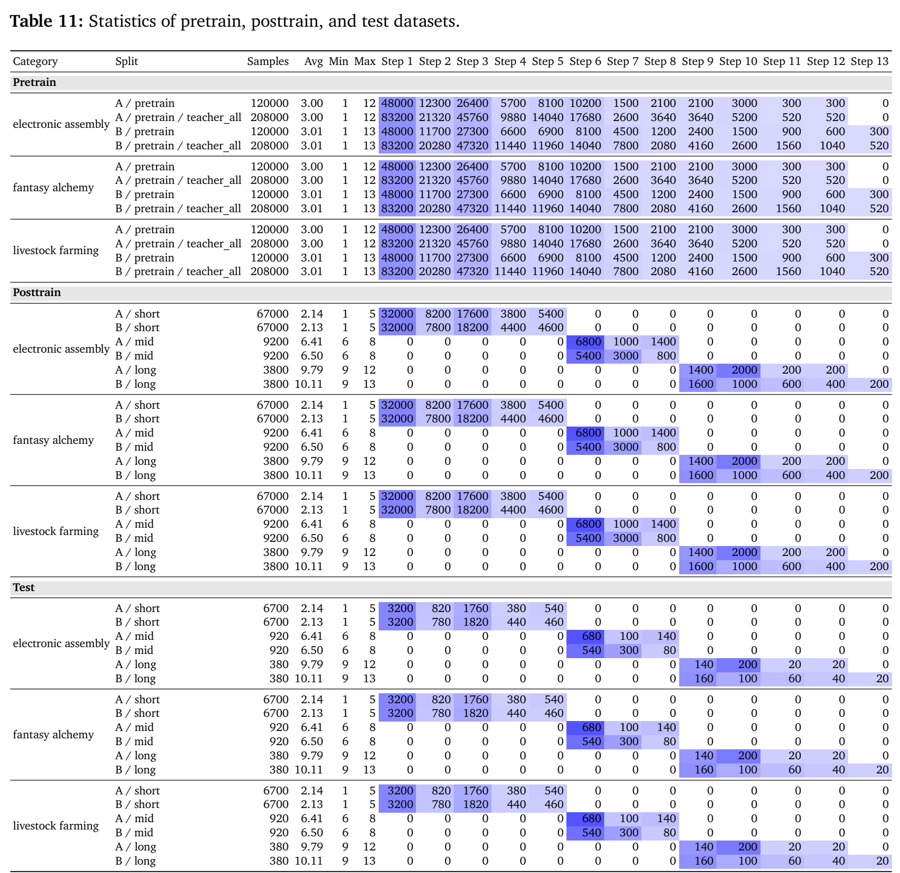
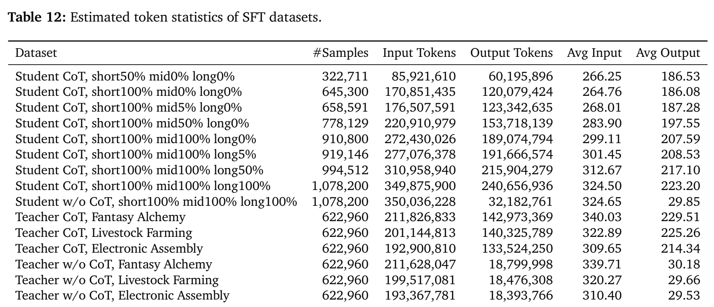
Conclusion
In this work, we systematically study how multi-turn long-horizon planning is acquired and improved across three training stages using a unified and controlled environment. At the pre-training stage, we show that explicit world model internalization, limited long-horizon data, and high-quality trajectories are critical for robust long-horizon planning. At the RL-based post-training stage, we distinguish between planning patterns and planning knowledge: OPD has a broader effective region than GRPO for shaping general planning patterns, whereas directly distilling unseen procedural knowledge may impair existing world modeling and out-of-domain planning. At the multi-teacher model consolidation stage, we show that MOPD integrates planning abilities by converging to shared distributions among teachers. Compatible planning patterns enable cross-environment generalization, partially shared structures support continual learning, and fully conflicting patterns lead to interference and catastrophic forgetting. Overall, our findings provide a controlled perspective on the mechanisms and boundaries of improving long-horizon planning across pre-training, RL-based post-training, and multi-teacher model consolidation.
Citation
Citation